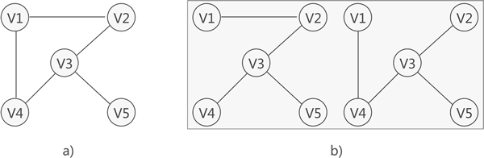
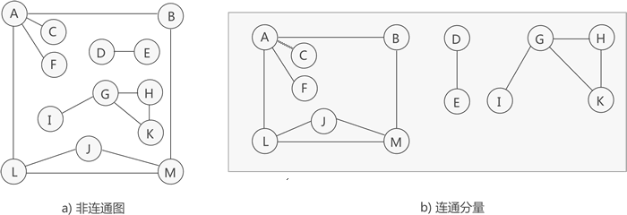
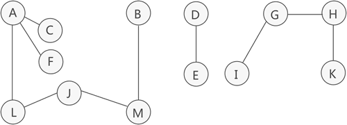
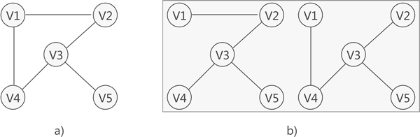
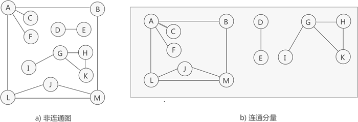
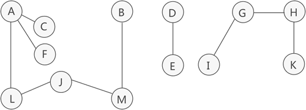

阅读：0
作者：解学武
什么是生成树，生成树（生成森林）详解
在学习连通图的基础上，本节学习什么是生成树，以及什么是生成森林。
对连通图进行遍历，过程中所经过的边和顶点的组合可看做是一棵普通树，通常称为生成树。

图 1 连通图及其对应的生成树
如图 1 所示，图 1a) 是一张连通图，图 1b) 是其对应的 2 种生成树。
因此，连通图的生成树具有这样的特征，即生成树中
我们知道，非连通图可分解为多个连通分量，而每个连通分量又各自对应多个生成树（至少是 1 棵），因此与整个非连通图相对应的，是由多棵生成树组成的生成森林。

图 2 非连通图和连通分量
如图 2 所示，这是一张非连通图，可分解为 3 个连通分量，其中各个连通分量对应的生成树如图 3 所示：

图 3 生成森林
对连通图进行遍历，过程中所经过的边和顶点的组合可看做是一棵普通树，通常称为生成树。

图 1 连通图及其对应的生成树
如图 1 所示，图 1a) 是一张连通图，图 1b) 是其对应的 2 种生成树。
连通图中，由于任意两顶点之间可能含有多条通路，遍历连通图的方式有多种，往往一张连通图可能有多种不同的生成树与之对应。
连通图中的生成树必须满足以下 2 个条件：- 包含连通图中所有的顶点；
- 任意两顶点之间有且仅有一条通路；
因此，连通图的生成树具有这样的特征，即生成树中
边的数量 = 顶点数 - 1。生成森林
生成树是对应连通图来说，而生成森林是对应非连通图来说的。我们知道，非连通图可分解为多个连通分量，而每个连通分量又各自对应多个生成树（至少是 1 棵），因此与整个非连通图相对应的，是由多棵生成树组成的生成森林。

图 2 非连通图和连通分量
如图 2 所示，这是一张非连通图，可分解为 3 个连通分量，其中各个连通分量对应的生成树如图 3 所示：

图 3 生成森林
注意，图 3 中列出的仅是各个连通分量的其中一种生成树。
因此，多个连通分量对应的多棵生成树就构成了整个非连通图的生成森林。